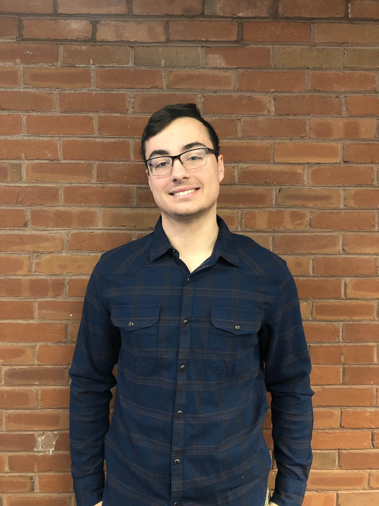

Hi, my Richie Nadeau and I am the current IT Engineer Supervisor at the Leahy Center. I am also a graduating Computer Networking and Cybersecurity Student!
I am currently a student at Champlain College and will receive my Bachelor's of Science in Computer Networking and Cybersecurity in May 2022. I am currently striving to learn and understand how I can help prevent and defend against future cyber attacks as well as make the Internet a safer place for all of us. My coursework and internship experience has helped me to develop effective Accountability, Communication, Resourceful and passion for technology.
My hobbies include watching Boston Bruins hockey, playing video games, and skiing.
